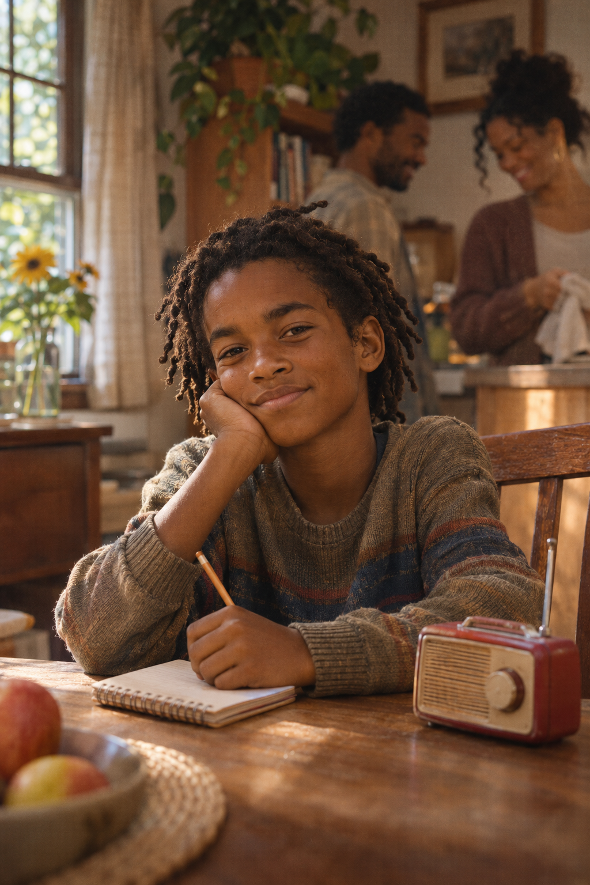
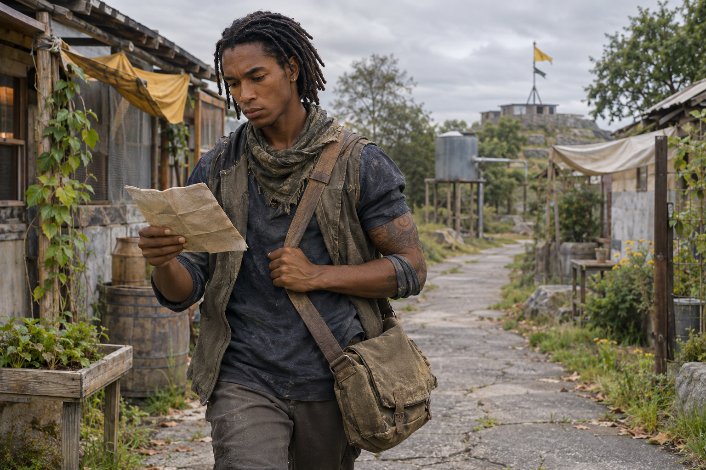

Listas de retorno
Registra quem partiu, quem chegou e qual recado precisa atravessar para que famílias não sejam separadas pela falta de informação.
SEM PATENTE // SEM ARQUIVO DE COORDENADASNascido antes do Dia D, Micah cresceu atravessando a mudança do mundo com Chloe e Darius. Aos 20 anos, leva mensagens por rotas seguras e mantém os cadernos de quem partiu, chegou ou ainda está a caminho.

20 anos no presente, idade confirmada pelo autor // detalhes da trajetória permanecem revisáveis
Micah nasceu antes do Dia D. A idade que tinha quando o colapso começou não está registrada, mas era criança: o bastante para guardar fragmentos da casa que deixou, e novo o suficiente para aprender depressa a rotina dos abrigos. Entre as primeiras lembranças que consegue nomear estão a voz de Chloe chamando-o para perto e o clique do rádio de Darius antes de cada partida.
O mundo mudou enquanto ele crescia. Chloe o ensinou a reparar em quem ainda não chegou; Darius, a esperar uma resposta antes de tratar o silêncio como confirmação. Com os anos, Micah passou a copiar os registros de saída e chegada dos abrigos, até perceber que uma linha vazia não prova que alguém se perdeu.
Aos treze anos, durante uma transferência, duas listas não concordavam sobre quem já havia alcançado o próximo ponto. Micah separou os nomes sem confirmação em uma página própria e pediu que ninguém os riscasse até o rádio responder. Uma família havia chegado por outro caminho. A demora não virou desaparecimento — e ele guardou essa regra: “em trânsito” também é uma resposta.
Hoje, Micah é mensageiro civil e responsável pelos cadernos de retorno de sua rede. Leva recados, notícias de família e avisos entre abrigos por trajetos confirmados. Mantém duas cópias dos registros e nunca anota neles a localização exata de quem está escondido. Seu trabalho é simples de explicar e difícil de abandonar quando alguém ainda espera.
Seu ponto cego é carregar cada mensagem atrasada como se a demora fosse culpa dele. Chloe o lembra de voltar antes que a noite feche a rota; Darius o espera no rádio para confirmar que chegou.
“Não apago um nome só porque a estrada atrasou.”
Micah ainda era criança. Nesta reconstrução, a família divide uma tarde comum em casa — um instante que a memória preserva sem precisar saber a data.

Aos 20 anos, Micah faz o trabalho que aprendeu crescendo entre abrigos: levar notícias, conferir chegadas e deixar espaço para quem ainda está a caminho.

Micah conecta os abrigos sem expor suas coordenadas. Anota o necessário para reunir pessoas e guarda o que poderia colocá-las em risco.
Registra quem partiu, quem chegou e qual recado precisa atravessar para que famílias não sejam separadas pela falta de informação.
SEM PATENTE // SEM ARQUIVO DE COORDENADASDe Chloe herdou o hábito de reparar em quem ficou para trás. De Darius, a paciência de esperar uma resposta antes de declarar silêncio.
CHLOE + DARIUS + MICAH // NÚCLEO BENNETTChloe o ensinou a perceber quem falta. Darius ensinou que toda frequência merece uma resposta. Micah leva os dois ensinamentos no mesmo caderno.
ABRIR ARQUIVO DA FAMÍLIA →